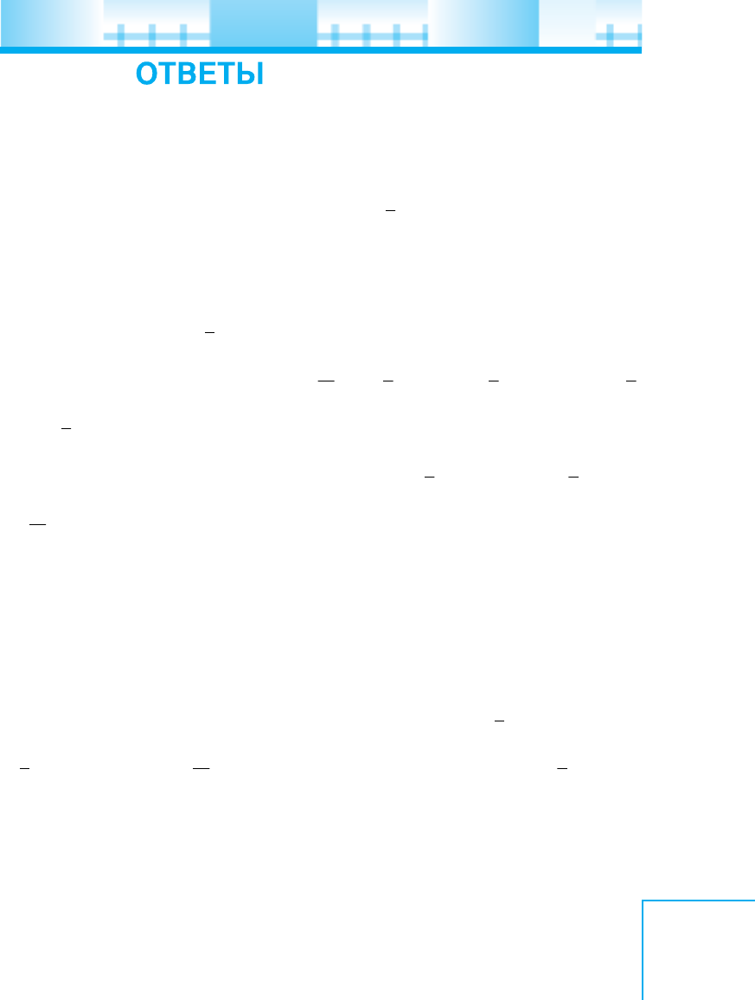

247
Ответы
Глава I
2. а) 20; б) 28,89. 3. а) 58; б) 10. 9. 45 ц. 18. 25%. 19. б) 1,3; 2,8; 5,8.
23. а) –4; б) 5,2. 28. а) –49; б) 0,8. 44. а) 60; б) 20; в) 3; г) 150. 45. 20 л.
46. 200 станков. 66. а) 4%; б) 15%. 68. а) 26,81; б) 77,01; в) 7,22; г) 78.
72. а) 35,7; б) 16,64; в) 10; г) 2,8. 74. а) 0; б) 1
4
9
. 77. а) 35; б) 124. 78. а) 94,2;
б) 40,3. 102. а) 6,75; б) 22; в) –6; г) –0,3. 103. а) 11 – 6,5x; б) 3p – 5,1;
в) 0,4a – 7; г) 6b – 5; д) y – 8; е) 8x – 8. 105. а) 8 + 2x; б) 46 – 5y; г) 5;
д) 4 – 10b. 106. а) 1; б) –7. 109. На 12,5%. 122. а) 4,5x – 2,4; б) 36 – 3,6a;
в) 12,3 – 8,5y; г) 2 – 14b. 128. а) 30; б) 16; в) –6; г) 3; д) –43; е) 180; ж) –5;
з) 300; и) –90. 129. а) 1
1
3
; б) 0,5; в) –2; г) 0; д) –0,15; е) –5; ж) 12; з) –3;
и) 0; к) 0; л) 0; м) 0. 130. а) 7; б) 1
1
11
; в) 5
1
4
; г) 5; д) 1
1
4
; е) –1,2; ж) 1
3
4
.
131. а)
5
6
; б) 2,5; в) –89; г) 0,5. 132. а) 2,4; б) –12; в) –5; г) –1,5. 133. а) 7;
б) –32; в) –3; г) –1,8. 134. а) 4; б) 2; в) 3,6; г) 3
1
4
. 135. а) 16; б)
3
4
; в) –4;
г) 3
6
13
; д) 3. 136. а) 5,5; б) 2,4; в) 10. 137. а), в), г) корней нет; б) любое чис -
ло является корнем уравнения. 138. а) 0; б), г) корней нет; в) любое число
является корнем уравнения. 142. а) 5,9; б) –9,4. 143. 214 и 178 билетов.
144. 8 и 11 домов. 145. 6,3, 6,3 и 3,4 см. 146. 3127 и 3110 м. 147. 4, 8, 24
и 96 рупий. 148. 46 и 40 деталей. 149. 60 000 р. 150. 16, 22 и 32 компью-
тера. 151. 400 г, 80 г, 75 г. 154. 55 и 11 кустов. 155. 20 км/ч. 156. 50 км/ч.
157. 8 дней. 158. 20 маляров и 8 плотников. 160. 1,5 кг. 161. 2,4 кг и
10 кг. 162. 20 и 40 кг. 165. –39. 171. 63 кВт ч. 172. 291 кг. 173. 17.
174. 14,25. 175. 15. 176. а) 28; б) 43 или –10. 184. 26 лет. 185. 80 стра -
ниц. 199. б) Уменьшится на 9%. 202. На 25%. 206. а)
2
3
; б) 2,5; в) 240;
г)
5
7
. 207. а) 1,44; б) 1
5
18
; в) 9,2; г) 6. 208. 207. 209. 0. 210. а)
1
4
; б) –16.
211. а) –12,15; б) 2,025; в) –16,2; г) 20,25. 223. а) 58; б) 52. 224. а) 0;
б) 3,947. 230. а) –0,5; б) 1. 240. а) 1,49; б) 0; в) –32,5; г) 0,3. 241. а) 1; 7;
б) –2; 9; г) –1; 1; 5; д) 0; –3. 243. а) 24; б) –35; в), г) корней нет. 244. а) –5;
б) 1. 247. 575 кроликов, 425 кур. 248. 42 куста. 249. 48 и 12 марок.
250. 10 дней. 251. 9 дней. 252. 13. 253. 8,75. 255. 8 и 16. 256. 30 и 50.